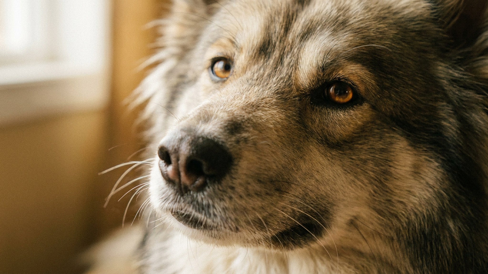

Тысячи лет якутскую лайку запрягали в упряжку и брали на охоту в тайге — и этот «мотор» никуда не делся у современного щенка из города. Недооценить его энергию — главная ошибка новичка: недогулянная лайка находит себе работу сама, обычно за счёт вашей мебели. Ниже — сколько нагрузки ей реально нужно, как содержать северную породу в квартире и кому она подойдёт.
🐾 У вас якутская лайка?
AnimaLife соберёт уход под породу: к каким болезням есть склонность, что проверять по возрасту, чем кормить и когда пора к врачу. Бесплатно, прямо в мессенджере.
Собрать план ухода → Собрать в MAX →
У вас iPhone? AnimaLife есть в App Store
Якутская лайка — древняя аборигенная порода коренных народов Якутии, где веками служила ездовой, охотничьей и пастушьей собакой. Это универсальный работник среднего размера (обычно 50–60 см в холке) с густой шерстью, часто с яркими голубыми или разными глазами.
Ключевое для понимания характера — лайка веками работала в упряжке, то есть в команде. Отсюда две черты: она очень ориентирована на человека и стаю и при этом привыкла к серьёзным ежедневным нагрузкам.
Это порода высокой энергии, а не диванный компаньон. Короткого выгула «вокруг дома» ей категорически мало. В минимуме день лайки — это:
Недостаток нагрузки лайка компенсирует сама: грызёт вещи, копает, воет и убегает. Почти всё «проблемное» поведение этой породы — это нерастраченная энергия, а не вредность.
Густая двойная шерсть с плотным подшёрстком рассчитана на мороз, поэтому лайке тяжело в жару — летом гуляйте в прохладные часы и всегда держите доступ к воде и тени. Линяет порода обильно, дважды в год «раздеваясь» подчистую.
Якутская лайка — для активных людей, которые любят улицу в любую погоду: бег, походы, лыжи, велосипед. Такому хозяину она отплатит преданностью, выносливостью и весёлым нравом, хорошо впишется в семью с детьми.
А вот новичку, домоседу или очень занятому человеку порода дастся тяжело — от скуки и одиночества страдают и собака, и квартира. Если берёте рабочую породу, заранее оцените, потянете ли режим, а вопросы здоровья и нагрузки обсуждайте со своим ветеринаром.
🐾 Ваш питомец — якутская лайка?
Заведите профиль в AnimaLife: приложение запомнит породу, возраст и вес и будет подсказывать по уходу именно для неё. Вопросы AI-ветеринару — круглосуточно и бесплатно.
Завести профиль → Завести в MAX →
У вас iPhone? AnimaLife есть в App Store
🐾 Понравился разбор?
Подпишитесь на канал — каждый день разбираем по одному тревожному симптому у кошек и собак: что в пределах нормы, а когда пора к врачу. Подпишитесь, чтобы не пропустить разбор, который может спасти здоровье вашего питомца.